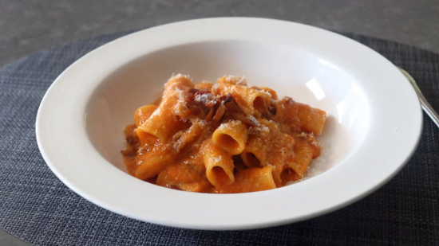

This is a pasta recipe.
Ingredients
- 4 ounces guanciale
- 1 tablespoon olive oil
- 1 tablespoon olive oil
- 3 tablespoons dry white wine
- 1½ cups fresh tomato sauce
- freshly ground black pepper to taste
- kosher salt to taste
- 1½ ounces finely grated Pecorino Romano cheese
Directions
- Cut guanciale into 1-inch by 1/8-inch strips.
- Heat olive oil over medium heat in a saucepan. Add guanciale and cook until well browned and fully rendered, 5 to 7 minutes. Turn off the heat and use a slotted spoon to transfer it to a bowl. Leave all fat in the pan.
- Start pasta: Bring a large pot of generously salted water to a boil. Cook rigatoni in the boiling water, stirring occasionally, until not quite done, about 10 minutes. You want it undercooked by at least 1 to 1 1/2 minutes.
- At the same time, add wine to the guanciale fat in the saucepan. Place over medium-high heat and cook for about 1 minute. Stir in tomato sauce and pepper; bring to a simmer.
- Transfer the almost fully-cooked pasta into the sauce using a slotted spoon; it's okay if some water gets in the sauce. Add guanciale and stir to combine. Season with salt. Cook and stir until pasta absorbs the sauce and finishes cooking, and the sauce thickens up, about 3 minutes. If the sauce gets too thick, add a splash of the pasta water.
- Turn off the heat and add some of the Pecorino cheese. Stir until melted, then repeat until all cheese has been added.
- Ladle into 2 bowls and serve.